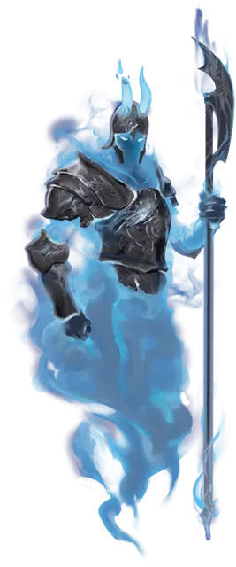

Отверженный
Foresworn
Средняя Нежить, законно-добрая

Класс Доспеха 18 (латы)
Хиты 82 (11к8 + 33)
Скорость 30 футов
| мод | спас | ||
|---|---|---|---|
| СИЛ | 20 | +5 | +8 |
| ЛОВ | 14 | +2 | +2 |
| ТЕЛ | 17 | +3 | +3 |
| мод | спас | ||
|---|---|---|---|
| ИНТ | 12 | +1 | +1 |
| МДР | 18 | +4 | +7 |
| ХАР | 10 | +0 | +0 |
Сопротивление урону некротическая энергия; дробящий, колющий, рубящий от немагических атак
Иммунитет к урону яд
Иммунитет к состояниям бессознательность, захват, испуг, истощение, окаменение, опутанность, отравление, паралич, сбивание с ног
Чувства тёмное зрение 60 футов, пассивное Восприятие 14
Языки Все, известные при жизни
Опасность 6 (2300 опыта)
Бонус мастерства +3
Особенности
Обязанности. Отверженный обязан исполнить единственный долг, который он дал себе при жизни. Пока долг не завершён, всякий раз, когда отверженного уничтожают, он вновь формируется в прежнем месте через 3 (1к6) дней, при этом все его хиты восстанавливаются.
Бестелесное движение. Отверженный может перемещаться сквозь других существ и объекты, как если бы они были труднопроходимой местностью. Он получает 5 (1к10) урона силовым полем, если заканчивает свой ход внутри объекта.
Необычная природа. Отверженному не нужен воздух, еда, питье или сон.
Действия
Мультиатака. Отверженный совершает три атаки Призрачной алебардой.
Призрачная алебарда. Рукопашная атака оружием: +8 к попаданию, досягаемость 5 фт., одна цель. Попадание: 12 (2к6 + 5) урона силовым полем.
Использование заклинаний. Отверженный накладывает одно из следующий заклинаний, не нуждаясь в никаких материальных компонентах, и Интеллект является для них базовой характеристикой (Сл спасброска от заклинания 15):
• 2/день каждое: приказ [command], обнаружение зла и добра [detect evil and good]
• 1/день: силовая стена [wall of force]
Бонусные действия
Призрачный батальон (перезарядка 5–6). Отверженный призывает себе на помощь батальон призрачных воинов. Призрачные воины заполняют 10-футовый куб с центром на отверженном. Он двигается вместе с отверженным, когда он двигается, и существуют до начала следующего хода отверженного. Пока присутствуют призрачные воины, область, которую они занимают, считается труднопроходимой местностью для всех существ, кроме отверженного, и досягаемость отверженного для рукопашных атак оружием увеличивается на 10 футов.
Описание
Отверженные — это духи павших соламнийских рыцарей, которые выполняют свой долг спустя долгое время после смерти. Вооруженный призрачными доспехами и оружием, отверженный сохраняет боевое мастерство, которым обладал при жизни, и может призывать на помощь магию и своих павших собратьев.
Как ревенанты [revenant], отверженные сосредоточены на единственной цели, и они отказываются покидать свой мертвый облик, пока не выполнял долг, который был у них при жизни. Например, отверженный может быть обязан защищать родословную своей семьи от вреда или охранять опасный артефакт от воров. Если отверженного уничтожают до того, как он выполнит свой долг, он возвращается через несколько дней, а его сила и цель возобновляются.